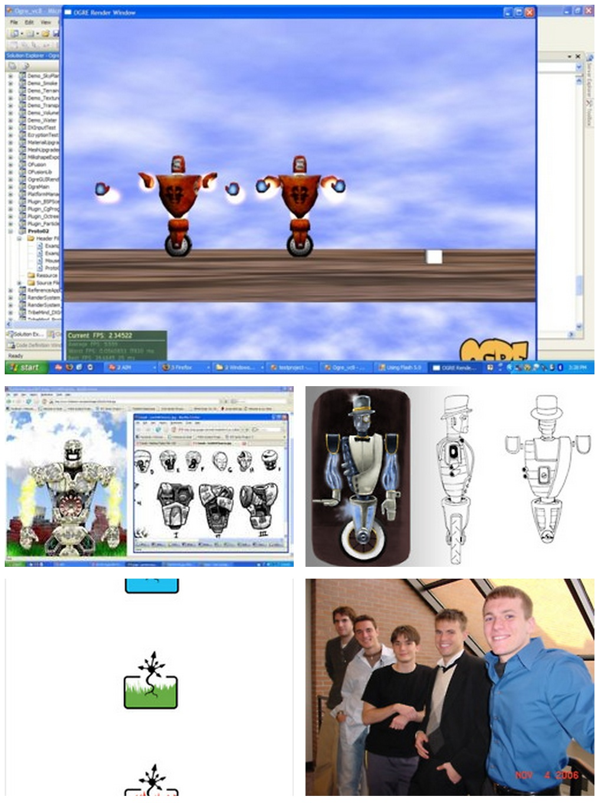

Wings and Jetpacks
A first post on my new Python-powered blog
more ...A first post on my new Python-powered blog
more ...Some ugly but fun screens from my current side project. The top screen is a concept done in PowerPoint using a early prototype screenshot for the game board.
The second screen is a screen shot of the latest prototype. The textures are obviously super ugly for the various types of ...
more ...One of the vehicles I created using Blender 3D for a Windows Phone 7 game I worked on for awhile.
more ...Ever want to start your own game development company? We did: TribeMind Studios. We had a blast, and our business plan was award winning.

more ...One of the few videos we actually rendered of our game assets:
more ...As a follow up to the simple tri-strip and terrain project, we spent the rest of this awesome class at RIT creating a 3D game of our choice. Obviously, this was a blast. I ended up taking the reigns on the project since I had been working on game engines ...
more ...For my second CG 2 project at RIT, I proposed to design and build a simple cross-platform game engine in C++. I did it mostly on Linux using VIM and CLI tools, which was of course a blast. The engine included an adapter layer that essentially abstracted away the graphics ...
more ...Nothing makes you appreciate a graphics API more than when you try to render a terrain mesh without one:


Some renderings from my CG 2 raytracer. Built completely from scratch w/ C on a Sun workstation. \<3